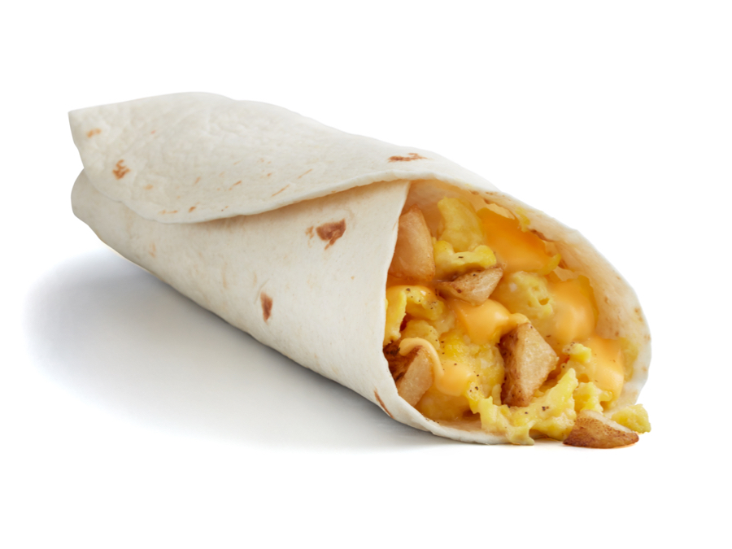

Breakfast Burrito Recipe

Great for a quick and delicious breakfast!
Ingredients
- 2 Eggs
- 2 Oz Cheese, Shredded or sliced
- 2 Tbsp Oil
- 1 Small Russet Potato
- 1 10" Tortilla
- 1/4 Tsp Salt
- 1/4 Tsp Paprika
- 1/4 Tsp Chili Powder
- Dash of Cayenne Powder
Steps
- Peel the potato and dice into 1/2" pieces.
- Microwave in a bowl for 3 minutes, allow to cool slightly.
- Heat oil over medium heat in a large frying pan.
- Add potatoes and cook, stirring or tossing frequently, until golden brown (about 6-7 minutes)
- While the potatoes are cooking, crack eggs into a bowl and whisk until smooth. Add a sprinkle of salt and pepper.
- When the potatoes are finished, transfer them to a bowl. Add salt, paprika, chili powder, and cayenne powder and toss to coat evenly.
- Add the eggs to the frying pan, stirring frequently until cooked.
- Place tortilla on a plate, add the cheese, and fold in half. Microwave for 40 seconds.
- Pull the tortilla apart and add the eggs and potatoes. Push the filling together into a concentrated round mass in the center of the tortilla.
Take the edge of the tortilla closest to you and pull it over so that it just covers the filling. Take the left and right sides and fold them over toward the middle.
Holding the sides firmly, roll the entire burrito away from you to finish wrapping it.